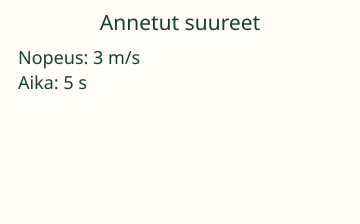
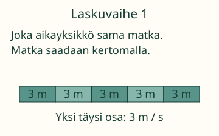
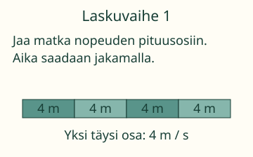
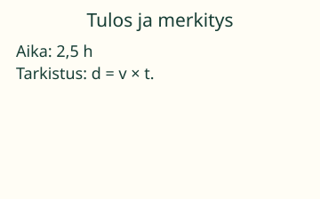

Loikka kulkee joka sekunti 3 metriä.
Ratkaise puuttuva matka tai aika.

Viidessä sekunnissa tuleeko matkaa 3 + 5 metriä vai viisi kertaa 3 metriä? Perustele ennen seuraavaa vaihetta.
d on matka, v nopeus ja t aika. Yksikkö s tarkoittaa sekuntia. 1 km = 1000 m. 1 min = 60 s. 1 h = 60 min = 3600 s.
Esimerkit ja selitykset
Matka rakentuu yhtä pitkistä osista
Vakionopeus 3 m/s tarkoittaa kolmea metriä joka sekunti. Viidessä sekunnissa kertyy viisi 3 metrin osaa: d = v × t = 15 m. Kuvan osat ovat matkan laskumalli, eivät ajan mittaus.

Montako osaa mahtuu matkaan?
Matka 16 m ja vakionopeus 4 m/s. Matkaan mahtuu neljä 4 metrin osaa. Jokaista täyttä osaa vastaa yksi sekunti: t = d : v = 4 s. Tarkista 4 m/s ×4 s = 16 m.

Siirrä idea puoleen tuntiin
100 km nopeudella 40 km/h: kahdessa tunnissa 80 km, jäljelle 20 km. Se on puolen tunnin matka. Aika on 2,5 h eli 2 h 30 min. Murtoluku 5/2 h käy myös.

Huomaa: Nopeuden ja ajan lukuarvojen summa 3 + 5 ei kuvaa kuljettua matkaa. Matka saadaan kertomalla. Aikaa ratkaistaessa jaetaan matka nopeudella, ei nopeutta matkalla.
Kokeile itse
Voit vastata suoraan. Kuva ja apu ovat käytettävissä.
Apua laskemiseen
Joka sekunti tulee 3 m lisää. Viisi kertaa sama matka: kerro 3 ×5.
Pilkku tai piste käy. Luvun lopun nollat eivät muuta arvoa. Tarkka murtoluku, kuten 5/18, käy. Jos määrä on oikein eri yksikössä, palaute kertoo sen ja pyytää vielä tehtävän yksikön.
Lisähaaste ja rajatapaukset
Nollanopeudella ja tunnetulla 5 sekunnin ajalla matka on 0. Jos taas sekä matka että nopeus ovat 0, aikaa ei voi päätellä yhdeksi luvuksi: esimerkiksi 0 s ja 5 s sopivat. Positiiviseen matkaan ei päästä nollanopeudella.
Opettajalle ja ilman ruutua
Vuosiluokat 7–9. d tarkoittaa kuljettua matkaa, ei paikkakoordinaattia. Esimerkeissä nopeus on vakio. Sama d = v × t toimii myös koko saman välin keskinopeudella, kun matka ja aika ovat sen määritelmän mukaiset. Nollanopeudesta ei jaeta: positiivinen matka on mahdoton ja nollamatkan aika alimäärätty. Tuleva M 79-DEC-DIV on lisätuki, ei uusi aloitusportti; puolikkaan tunnin voi ratkaista osina.
Piirrä viisi yhtä pitkää 3 metrin matkaosaa. Merkitse alle kunkin osan vastaava 1 s vakionopeudella. Leikkaa erikseen 16 metrin mallinauha neljään 4 metrin osaan. Pidä matkan ja ajan yksiköt eri riveillä. Mallipaperi ei mittaa oikeaa kävelynopeutta.
Laskumallin neljä vaihetta ovat päättelyn näkyvä tuki. Ne eivät kuvaa kulunutta aikaa tai mitattua liikettä. Suureiden syötealue on 0–1000000; yksiköt ovat vain m, km, cm, s, min, h, m/s ja km/h oman suureensa mukaisesti. Valmiit tehtävät käyttävät tämän alueen pieniä osia. Negatiivista suuntaa tai kiihtyvää liikettä ei tässä mallinneta.
Harjoitus on vain tämän sivun laskutukea, vastauksia ei tallenneta. Se ei osoita muistamista, itsenäistä hallintaa tai fyysistä mittaustaitoa. Syötteen tekninen raja on 128 merkkiä, murtoluvun osissa 24 numeroa ja desimaalissa 12 merkitsevää desimaalipaikkaa. Rajan ylitys hylätään, ei pyöristetä.
Lähtökysymys: Miksi 0 m :4 m/s antaa 0 s, mutta 0 m :0 m/s ei anna yhtä ainoaa aikaa?